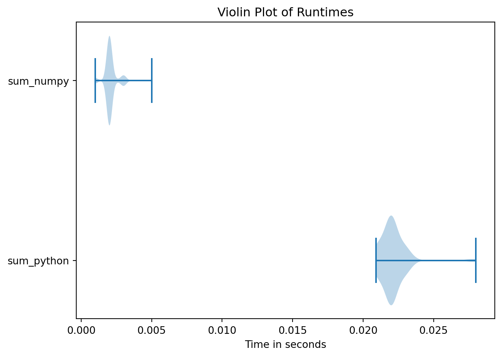
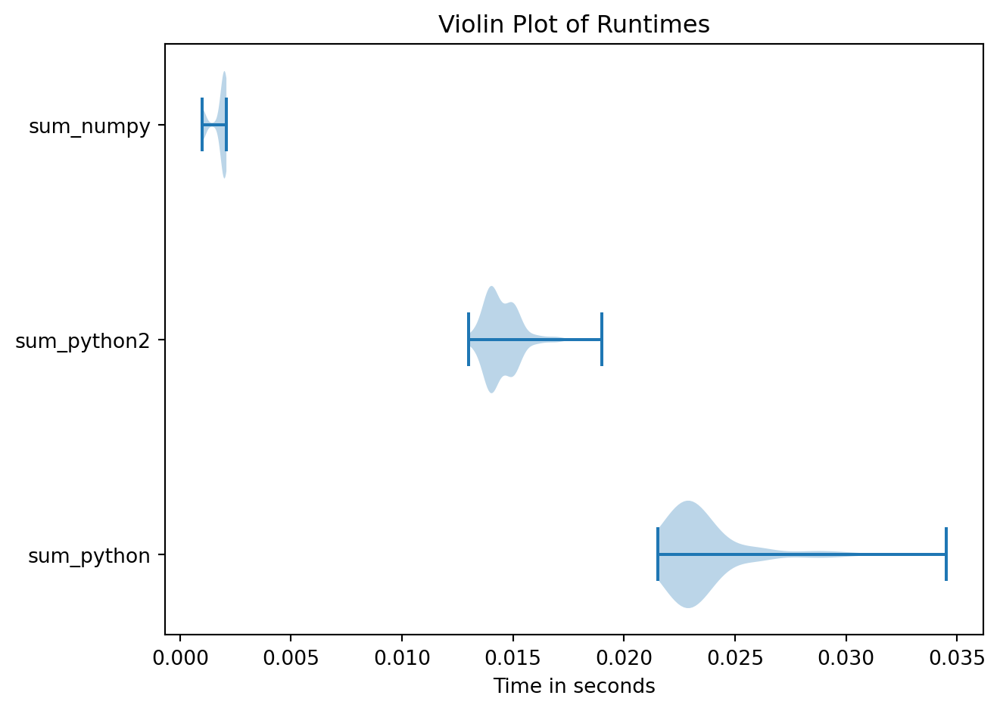
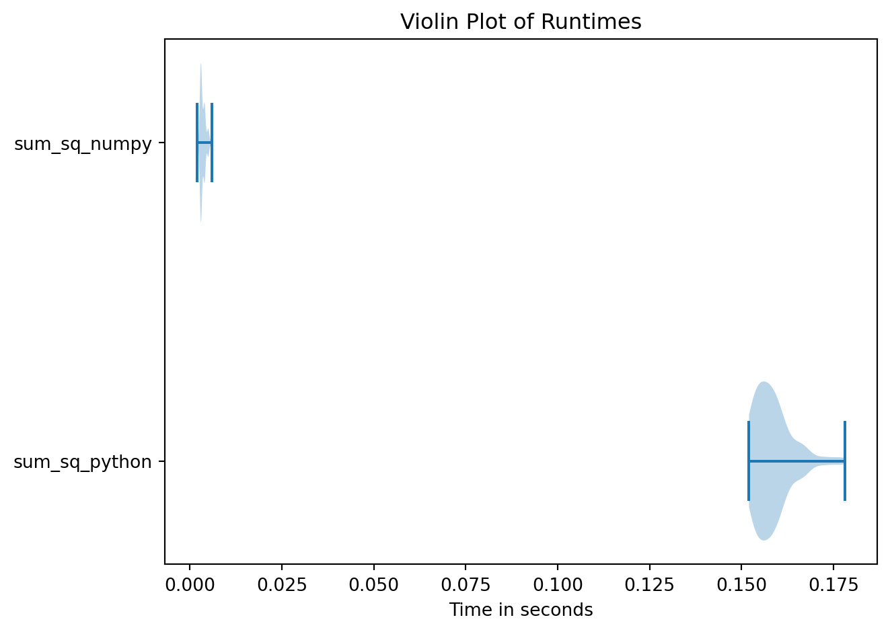

def sum_python(n):
numbers = range(0, n)
acc = 0
for i in numbers:
acc = acc + i
return acc1 Introduction to Numpy
In this course we’ll several external Python libraries. If you have trouble installing Python locally, you can always use Google Colab.
Numpy, the fundamental package for scientific computing with Python. Numpy does all the heavy mathematical lifiting, such as matrix multiplication and summing. We use Numpy due to its speed and convenience. The syntax of Numpy is very similar to that of TensorFlow, which is used extensively in heavy-duty machine learning applications.Pandasdeals with data frames. Most of our data will be on the Pandas format.statsmodels. Statsmodels is the Python package for basic statistical analysis in Python. It closely mimicsRin syntax and functionality.scikit-learnis somewhat similar to statsmodels, but contains much more functionality and is geared towards machine learning instead of statistics.matplotlib, the basic plotting library in Python.seaborn. A package that simplifies plotting.tinybench. Used for doing benchmarks, i.e., timing how long functions take to run. You can learn a lot about how to write efficient code by routinely using this package while coding. It’s also quite fun - optimizing code is one of the pleasures of programming, andtinybenchmakes it easy to check if any of your optimizations make sense.
1.1 Curriculum
- Numpy for absolute beginners
- The notes on this webpage.
1.1.1 Numpy
I sometimes write that you should familiarize yourself with the documentation. This means that you should: 1. Fire up an instance of Visual Studio Code (recommended), Jupyter Notebook, or your prefered way to write Python. 2. Go to the supplied links and actively read them. You can’t just print out the documents and read them in the shade of a tree. You should make an hypothesis about how a snippet of code works, copy the Python code to your editor, and then modify it to check if your hypothesis is true.
1.1.2 The speed of Numpy
Python is very slow language. So slow, in fact, that most optimizations in Python is about moving as many computations as possible to Numpy.
The following function sums up all numbers from \(1..n\) in vanilla Python.
The function below uses Numpy for the same task.
import numpy as np
def sum_numpy(n):
numbers = np.arange(0, n, dtype = np.int64)
return numbers.sum()Both functions return the same value.
sum_python(10 ** 6)499999500000sum_numpy(10 ** 6)499999500000The Numpy code is arguably easier to read. There is no doubt what the .sum method does.
We use the dtype = np.int64 argument in the np.arange function. This makes int64 the data type of the resulting Numpy array. These are 64 bits (signed) integers, but the standard is 32 bits integer. The difference between these lie in their maximum and minimum values. The maximal value of a 64 bits integer is 9,223,372,036,854,775,807, but the maximal value of an i32 is merely 2,147,483,647. You have to manually specify i64 when dealing with big integers in Numpy, but you do not need to do that in Python, as it can use integers of arbitrary size, at the cost of speed. You can always find the data type of a Numpy object using the .dtype method, e.g.,
x = np.arange(0, 10)
x.dtypedtype('int32')We compare the execution speed of these functions using the benchmark function from the tinybench package. As always, type help(benchmark) in a Python interpreter to get help for the function. Below, we sample ntimes = 10 and use a warm up of 10 (to get the processor running). The g argument tells benchmark where to find the functions in the list, and the argument globals() tells it to look at the top level.
from tinybench import benchmark, benchmark_env
bench = benchmark(['sum_python(10 ** 6)', 'sum_numpy(10 ** 6)'], ntimes = 100, warmup = 10, g = globals())
bench.plot()
The Numpy version is much faster. To pinpoint by exactly how much, we need to look at the mean execution times.
bench.means
bench.means['sum_python'] / bench.means['sum_numpy']10.571063624202676The Numpy implementation is roughly \(10\) times faster. One can expect speedups even larger than this in more complex applications.
1.2 Exercises
1.2.1 Data types
1.2.1.1 Exercise 1
Figure out the answer the following questions, using e.g. the Numpy documentation. (Look up the functions iinfo).
- What is the minimal value of a 32 bit integer in Numpy?
- What is the minimal value of a 64 bit integer in Numpy?
- Is there an integer type even larger than
int64, provided you restrict yourself to non-negative numbers, i.e., unsigned integers?
Solution
The first two questions can be answered by
np.iinfo(np.int32)iinfo(min=-2147483648, max=2147483647, dtype=int32)np.iinfo(np.int64)iinfo(min=-9223372036854775808, max=9223372036854775807, dtype=int64)For the last question: Yes, the unsigned integers uint64 are larger.
np.iinfo(np.uint64)iinfo(min=0, max=18446744073709551615, dtype=uint64)1.2.1.2 Exercise 2
Decimal numbers in computer science are called floats, or floating point numbers. (Look up the functions finfo).
- What types of floats are available in Numpy?
- What is the default float type when using
linspace? - What are the maximal and minimal values of these float types?
Solution
- We have
np.float16,np.float32andnp.float64. - Using
np.linspace(0, 1, 4).dtypewe find thatfloat64is the default data type. - We can read that from the results below:
np.finfo(np.float64)finfo(resolution=1e-15, min=-1.7976931348623157e+308, max=1.7976931348623157e+308, dtype=float64)1.2.2 Benchmarking and Numpy
1.2.2.1 Exercise 1
Python implements a method sum that sums every member of an iterable such as list. Implement a function sum_python2 that uses sum instead of a for-loop, but does not use Numpy. Compare its performance to sum_python above. What do you see?
Solution
def sum_python2(n):
numbers = range(0, n)
return sum(numbers)
from tinybench import benchmark, benchmark_env
bench = benchmark(['sum_python(10 ** 6)', 'sum_python2(10 ** 6)', 'sum_numpy(10 ** 6)'], ntimes = 100, warmup = 10, g = globals())
bench.plot() 
1.2.2.2 Exercise 2
Write a function that squares and sums the numbers from 1 to n, one in Numpy and one in pure Python. Roughly how much faster is the Numpy implementation than the Python implementation when using n=1000, n=10000, or n=10**6? (Hint: Make sure to use a Numpy function to square all the elements!)
Solution
def sum_sq_python(n):
numbers = range(0, n)
acc = 0
for i in numbers:
acc = acc + i**2
return acc
def sum_sq_numpy(n):
numbers = np.arange(0, n, dtype = np.int64)
return np.square(numbers).sum()
from tinybench import benchmark, benchmark_env
bench = benchmark(['sum_sq_python(10 ** 6)', 'sum_sq_numpy(10 ** 6)'], ntimes = 100, warmup = 10, g = globals())
bench.plot() 
bench.means['sum_sq_python'] / bench.means['sum_sq_numpy']44.689294939033051.2.2.3 Exercise 3
Recall that the sample variance is defined as \(\sum (x_i - \overline{x})^2 / (n-1)\), where \(\overline{x}\) is the sample mean and \(n\) is the number of observations. Compare a Numpy-free implantation to the var method of Numpy (using the optional argument ddof = 1.), on the numbers from 1 .. 10 ** 5, but this time, let dtype = float64. Be sure to check that your functions return the same result!
(Note: You algorithm and Numpy might give different results for very large n. This is due to a phenomenon called numerical instability, which we ignore in this course.)
Solution
def var_python(n):
numbers = range(0, n)
mean = sum(numbers) / n
return sum([(x - mean) ** 2 for x in numbers]) / (n - 1)
def var_numpy(n):
numbers = np.arange(0, n, dtype = np.float64)
return numbers.var(ddof = 1)var_numpy(10**5)833341666.6666666var_python(10**5)833341666.66666661.2.3 Numpy exercises
1.2.3.1 Exercise 1
How do you do the following in Numpy? Make sure to make your own example in Python! 1. Make an identity matrix with n rows? 2. Make a matrix consisting of \(0\)s only? 3. Calculate the empirical mean of a vector? 4. Calculate the standard deviation of a vector normalized so that the variance is unbiased? (Hint: Read the Numpy documentation to find out what I mean!) Which of these do you think we are most interested in in this course? 5. Calculate “cumulative sum” operation on a vector x? (This operation creates a new vector y whose first element is x[0], second x[0] + x[1], etc.) 6. Take the element-wise logarithm of a matrix?
1.2.3.2 Exercise 2
Do this Codewars exercise using Numpy indexing, i.e., not the built-in function transpose. You need to register at Codewars to do this exercise. In this and other Codewars problems, you can click the “Unlock solutions” button for solutions.
1.2.3.3 Exercise 3
Do the following exercise, both with and without Numpy. (Hint: Use the round method to round the Numpy arrays. Remember to convert between list and array types!)
1.2.3.4 Exercise 4
Do the following exercise, both with and without Numpy.
1.2.3.5 Exercise 5
The Github repo Numpy-100 contains 100 Numpy exercises of variable difficulty. The Github page also includes hints and solutions. You can read the 100 problems here. Do exercises 1 - 11 in this repo. There is no upper limit to how many of the numpy-100 you should do, but I would recommend you do as many as you can find time for. (These exercises are pretty short!) The point is to grok Numpy. (Hint: Use the Numpy documentation, Google, StackExchange, and so on. Check the hints if you have to.)